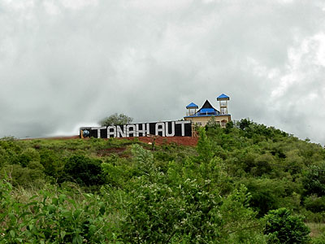
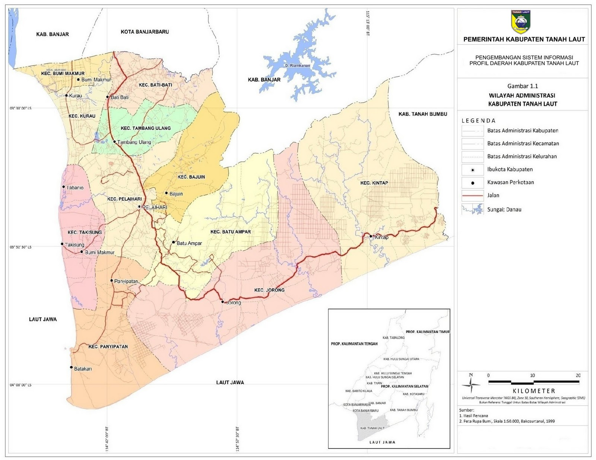
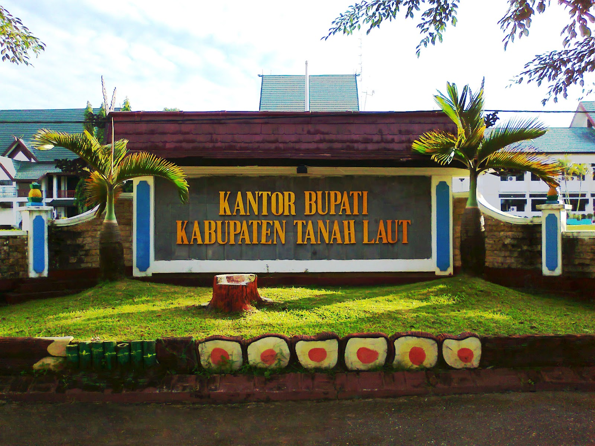
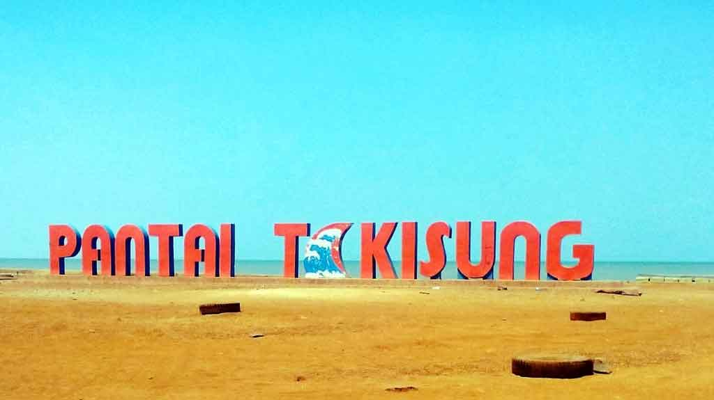
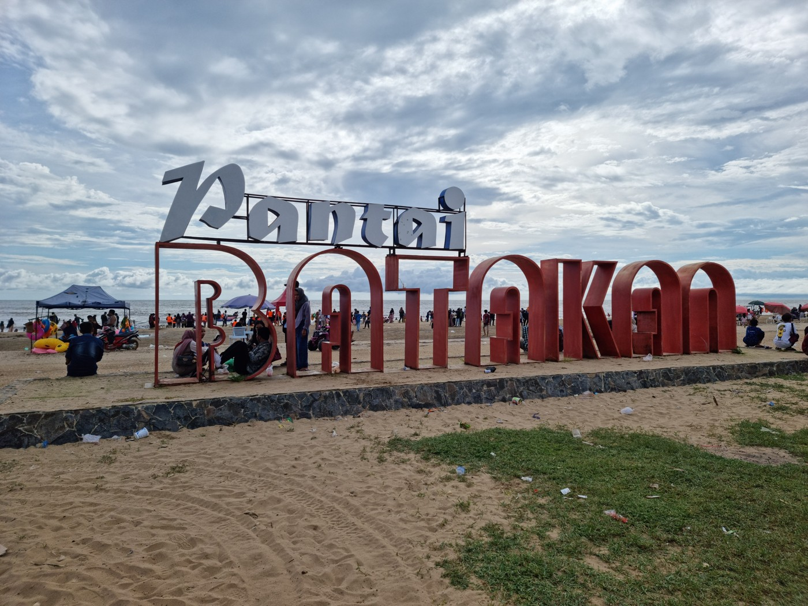
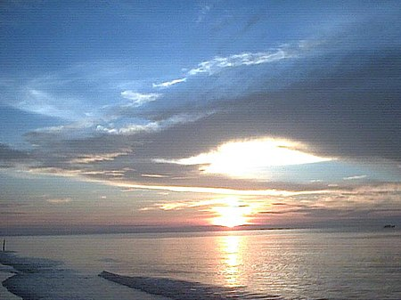

Sejarah Kabupaten Tanah Laut
Sebelum Masehi
Sekitar kurun waktu 4000 SM, Kebudayaan Barito muncul di sepanjang pesisir Teluk Sarunai purba di Kalimantan Selatan, termasuk di dalamnya dataran yang kini menjadi Kabupaten Tanah Laut, yang masuk ke dalam peradaban tersebut.
Zaman Kerajaan (Tahun 600 - 1860)
Sejak abad ke-6 hingga ke-7, wilayah Tanah Laut telah menjadi bagian dari wilayah perluasan peradaban Kerajaan Nan Sarunai. Kerajaan ini awalnya didirikan oleh suku Dayak Maanyan di daerah Amuntai sekitar tahun 242 SM. Kerajaan ini bertahan selama lebih dari 1600 tahun hingga akhirnya runtuh diserang oleh Kerajaan Majapahit yang dipimpin oleh Laksamana Nala sekitar tahun 1358. Akibatnya, masyarakat Dayak Maanyan pun terpaksa mengungsi ke pedalaman.
Pengaruh Kolonial di Kesultanan Banjar
Pada tahun 1602, VOC Belanda tiba di Nusantara. VOC mendirikan Benteng Tabanio di sekitar muara Sungai Tabanio sekitar tahun 1789. Pemicu kehadiran VOC di Tanah Laut adalah potensi perkebunan lada dan perikanan di Tabanio serta tambang emas di Pelaihari.
Masa Pemerintahan Hindia Belanda (Tahun 1860 - 1940)
Ketertarikan Hindia Belanda di Tanah Laut selain pertanian dan rempah-rempah, terutama adalah karena Tanah Laut adalah salah satu daerah yang luas dan sebagai penghasil emas, besi, dan platina. Hasil emasnya bahkan lebih banyak daripada di tempat lain.
Masa Pendudukan Jepang (Tahun 1941 - 1945)
Pada tahun 1941, Kekaisaran Jepang memulai penaklukkan Asia Timur Raya. Pada tahun 1942, seluruh Kalimantan dikuasai oleh pasukan Jepang. Armada Jepang kemudian mendirikan markas di Banjarmasin dan Balikpapan.
Masa Kemerdekaan Indonesia (Tahun 1945 - 1965)
Tanah Laut adalah sebuah kewedanan yang berada di dalam wilayah Daswati II Banjar, dengan wilayahnya yang luas dan memiliki potensi yang besar sebagai sumber pendapatan asli daerah, seperti hutan beserta isinya, laut, kekayaan alam di dalamnya, dan barang-barang tambang dan galian yang tersimpan di dalam tanah serta kesuburan tanahnya. Potensi cukup besar yang dimiliki oleh Tanah Laut pada waktu itu belum bisa terkelola dikarenakan belum tersedianya sarana dan prasarana yang memadai.
Oleh karena keadaan yang demikian dan sejalan dengan adanya beberapa kewedanan di Kalimantan Selatan yang menuntut untuk dijadikan Daswati II, membangkitkan semangat dan keinginan yang kuat bagi tokoh-tokoh dan masyarakat Tanah Laut untuk meningkatkan kewedanannya menjadi Daswati II.

Geografis Kabupaten Tanah Laut
Letak Geografis
Kabupaten Tanah Laut terletak pada posisi:
- Lintang Selatan: 3°30'33 LS - 4°11'38 LS
- Bujur Timur: 114°30'20 BT – 115°23'31 BT
Dengan batas-batas administratif sebagai berikut:
- Utara: Kabupaten Banjar dan Kota Banjarbaru
- Timur: Kabupaten Tanah Bumbu dan Laut Jawa
- Selatan: Laut Jawa
- Barat: Laut Jawa
Luas Wilayah
Luas wilayah Kabupaten Tanah Laut adalah 3.631,35 km² (363.135 ha), yang merupakan sekitar 9,71% dari luas Provinsi Kalimantan Selatan.
Daerah yang paling luas adalah:
- Kecamatan Jorong dengan luas 628,00 km²
- Kecamatan Batu Ampar seluas 548,10 km²
- Kecamatan Kintap dengan luas 537,00 km²
Kecamatan yang luas daerahnya paling kecil adalah Kecamatan Kurau dengan luas hanya 127,00 km².
Klasifikasi Wilayah
Berdasarkan tingkat kelandaiannya, wilayah Kabupaten Tanah Laut dapat diklasifikasikan ke dalam empat kelompok:
- Wilayah datar (kemiringan 0-2%) sebesar 290.147 ha
- Wilayah bergelombang (kemiringan 2-15%) sebesar 43.060 ha
- Wilayah curam (kemiringan 15-40%) sebesar 26.833 ha
- Wilayah sangat curam (kemiringan >40%) sebesar 12.890 Hektar

Pemerintahan Kabupaten Tanah Laut
Bupati (Kepala Daerah)
Bupati Kabupaten Tanah Laut adalah pejabat eksekutif tertinggi di tingkat kabupaten. Mereka bertanggung jawab atas:
- Pelaksanaan program pembangunan dan kebijakan daerah.
- Pengelolaan administrasi pemerintah kabupaten.
- Pengambilan keputusan strategis untuk kemajuan daerah.
- Menjaga stabilitas dan keamanan di wilayah kabupaten.
Dewan Perwakilan Rakyat Daerah (DPRD)
DPRD Kabupaten Tanah Laut adalah lembaga legislatif yang terdiri dari anggota yang dipilih oleh masyarakat dalam pemilihan umum. Tugas utama DPRD meliputi:
- Membuat, mengesahkan, dan merevisi peraturan daerah (perda).
- Mengawasi pelaksanaan program pemerintah dan penggunaan anggaran.
- Menyuarakan suara dan kepentingan masyarakat di tingkat legislatif.
- Terlibat dalam perencanaan dan pengambilan keputusan dalam pembangunan daerah.
Sekretariat Daerah (Setda)
Sekretariat Daerah adalah lembaga pendukung utama bagi Bupati. Tugas utamanya adalah:
- Mengoordinasikan program-program pemerintah dan kebijakan yang dikeluarkan oleh Bupati.
- Memberikan dukungan administratif kepada Bupati dan jajaran pemerintah kabupaten.
Badan Perencanaan Pembangunan Daerah (Bappeda)
Bappeda bertanggung jawab merencanakan dan mengkoordinasikan pembangunan di Kabupaten Tanah Laut. Mereka menyusun RPJMD dan RPJPD sebagai panduan bagi pembangunan daerah.
Dinas-Dinas
Kabupaten Tanah Laut memiliki berbagai dinas yang mengurus berbagai sektor, seperti pendidikan, kesehatan, infrastruktur, pertanian, pariwisata, dan lainnya. Setiap dinas memiliki tugas spesifik dalam melaksanakan program-program pemerintah di bidangnya.
Kecamatan
Kabupaten Tanah Laut terbagi menjadi beberapa kecamatan. Setiap kecamatan dipimpin oleh seorang Camat yang bertanggung jawab atas administrasi di tingkat kecamatan dan pelaksanaan program-program pemerintah.
Desa dan Kelurahan
Di tingkat desa, terdapat desa-desa, sementara di tingkat kelurahan, terdapat kelurahan-kelurahan. Masing-masing dipimpin oleh seorang Kepala Desa (di desa) dan Lurah (di kelurahan) yang bertanggung jawab atas administrasi dan pelayanan kepada masyarakat setempat.
Badan Permusyawaratan Desa (BPD)
Di tingkat desa, BPD berperan dalam proses musyawarah dan pembuatan kebijakan di tingkat desa.

Wisata
Kabupaten Tanah Laut memiliki berbagai objek wisata alam dan budaya yang menarik. Anda dapat menikmati keindahan alam, seperti hutan tropis, sungai, dan pegunungan.
Pantai Takisung

Pantai Takisung adalah salah satu objek wisata yang terletak di Desa Takisung, Kecamatan Takisung, Kabupaten Tanah Laut, Provinsi Kalimantan Selatan. Pantai ini berjarak sekitar 22 kilometer dari Kota Pelaihari (Ibu kota Tanah Laut) dan sekitar 87 kilometer dari Kota Banjarmasin.
Wisata Pantai Takisung merupakan salah satu lokasi wisata andalan bagi Kabupaten Tanah Laut. Pantai Takisung memiliki berbagai sarana dan prasarana termasuk jalan beraspal menuju objek wisata, WC umum, kamar mandi, areal parkir, pasar dengan pedagang ikan dan buah-buahan, pedagang makanan, minuman, dan cendera mata, panggung, halte, pos polisi, shalter (tempat berteduh), restoran, dan tempat bermain.
Luas areal wisata pantai Takisung sekitar 0,65 hektar dengan panjang pantai sekitar 85 meter dan lebar 80 meter, dimulai dari tepi pantai. Kawasan wisata pantai Takisung termasuk tipologi pantai berpasir.
Pantai Batakan

Pantai Batakan adalah objek wisata bahari yang terpadu dengan panorama alam pegunungan pantai yang terletak di Desa Batakan, Kecamatan Panyipatan, Kabupaten Tanah Laut, Kalimantan Selatan. Pantai ini dinamai Batakan karena dulu ada dua pelaut bersaudara yang berlayar menggunakan sampan (jukung) mengarungi sungai Saluang dan sampai tiba di daratan tersebut.
Pantai berpasir coklat ini memiliki debur ombak kecil dengan air laut yang tidak begitu jernih. Pohon-pohon kelapa menghiasi tepian pantai, sementara di sisi lain terdapat perkampungan nelayan. Dari pantai ini, pengunjung dapat melihat gunung Meratus yang menjulang tinggi dan tampak hijau dengan pohon-pohon pinus.
Pantai Batakan juga dikenal dengan ritual yang diadakan oleh para nelayan pada bulan Juli atau Agustus sebagai bentuk terima kasih atas rezeki yang diperoleh dari laut selama setahun dan memohon keselamatan ketika melaut.
Pantai Swarangan

Pantai Swarangan adalah sebuah objek wisata pantai yang terletak di Desa Swarangan, Kecamatan Jorong, Kabupaten Tanah Laut, Kalimantan Selatan. Pantai ini menawarkan berbagai aktivitas seperti bermain air di tepian, berenang, atau hanya menikmati keindahan panorama pantai.
Pantai ini terkenal di kalangan peselancar karena gelombangnya yang cukup besar, meskipun kurang diminati oleh pengunjung lain. Pantai ini juga menawarkan pemandangan matahari terbit dan tenggelam yang menarik.